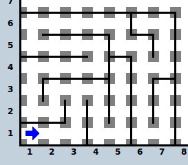
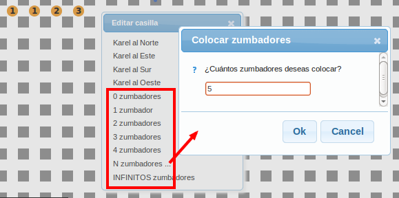

Karel es un lenguaje de programación didáctico que ayuda a comprender los principales conceptos de un lenguaje de programación imperativo. Karel es una flecha azul que ejecutará instrucciones dentro de un mundo y lleva consigo una mochila donde guarda zumbadores con los que podrá recrear algoritmos interesantes.
Karel Online presenta 5 secciones accesibles en las pestañas superiores. En "Mundo" podrás diseñar mundos de Karel, en "Programa" podrás editar tu código y compilarlo. En "Ejecutar" se mostrarán tu código y mundo y podrás ver paso a paso la ejecución de Karel. En "Ayuda" encontrarás tutoriales para aprender a usar Karel Online. Finalmente, en "Retos" encontraras pequeños problemas que pondrán a prueba lo que has aprendido.
En el mundo de Karel, las calles van de Este a Oeste, y son numeradas comenzando por 1. No hay números de calle igual a 0 o negativos. Las avenidas van de Norte a Sur, y también están numeradas empezando por 1. Tampoco hay números de avenida igual a 0 o negativos. Se le llama esquina a la intersección de una calle con una avenida. Karel va de una esquina a la siguiente en un solo movimiento.
Karel puede posicionarse en cualquiera de las esquinas del mundo, son 10000 en total, además, Karel puede orientarse en una de las siguientes cuatro direcciones: Este, Oeste, Norte y Sur. Sólo gira 90º cada vez. Para posicionar y orientar a karel da clic en la esquina donde lo quieres poner, posteriormente, selecciona la orientación de Karel.
Puedes colocar y quitar muros en el Norte, Sur, Este u Oeste del cursor dando click con el botón izquierdo del ratón en la intersección de las calles correspondientes. Los muros que limitan las calles y avenidas son estáticos durante ejecución e impiden que Karel avance a través de ellos.
Las válvulas son paredes especiales. Solo permiten el paso en un sentido, es decir, puedes pasar por un lado de la pared, pero por el otro lado no. Pueden ser pensadas como válvulas que permiten en flujo en un solo sentido. Las válvulas se representan como una pared con un triángulo indicando el sentido donde se permite el flujo.
Otro elemento de interés en el mundo de Karel son los zumbadores. Un zumbador es una forma de marca que Karel puede escuchar sólo cuando se encuentra en la misma esquina que el zumbador. Karel tiene una mochila que puede utilizar para guardar ahí los zumbadores que vaya cogiendo. También puede hacer lo contrario, es decir, sacar los zumbadores de su mochila y depositarlos en las esquinas por las que va pasando. Puedes ajustar el número inicial de zumbadores en cada esquina dando click con el botón derecho del ratón en la esquina deseada y seleccionando el número de zumbadores deseados (para colocar entre 5 y 100 zumbadores, selecciona la opción N zumbadores y escribe el número deseado).
Haremos un programa donde Karel avance una casilla. Para hacerlo te recomendamos iniciar un programa nuevo. Te deberá quedar algo parecido a lo siguiente
class program{
program(){
turnoff();
}
}
Por lo pronto enfoca tu atención en el bloque de program, las instrucciones dentro de este bloque serán las primeras en ser ejecutadas por Karel. Karel siempre debe terminar apagado, la instrucción turnoff le dice a Karel que se apague. Agrega la instrucción move antes de la instrucción turnoff, está instrucción le indica a Karel que avance una casilla hacia adelante. Tu código deberá verse así:
class program{
program(){
move();
turnoff();
}
}
Proseguiremos a compilar el programa. La compilación verifica el código, y si está correcta, cargará el código en Karel para que pueda ejecutarlo. Presiona el botón "Compilar" para hacerlo.
Ahora vamos a ejecutar el programa, ve a la pestaña de "Ejecutar" y presiona el boton "Correr". Veras como Karel va ejecutando las instrucciones, como avanza y finalmente se apaga.
¡Felicidades has hecho to primer programa en Karel! Continua para aprender sobre otros movimientos de Karel y como usar sus sensores.
Hay cinco comandos básicos para Karel, estos son:
Karel Online fue desarrollado por Luis Eduardo Enciso y Montserrat Arenas, pero no podría haber sido posible sin los trabajos previos de otras personas.
El Robot Karel fue introducido por Richard Pattis en su libro Karel the Robot: A Gentle Introduction to the Art of Programming with Pascal, John Wiley & Sons, Inc., 1981.
El compilador de escritorio de la Olimpiada Mexicana de Informática, en el cual se basó mucho del diseño y sintáxis de Karel Online, fue hecho por Cesar Cepeda.
Agradecimientos especiales a los proyectos Jison, ace, jQuery y jQueryUI